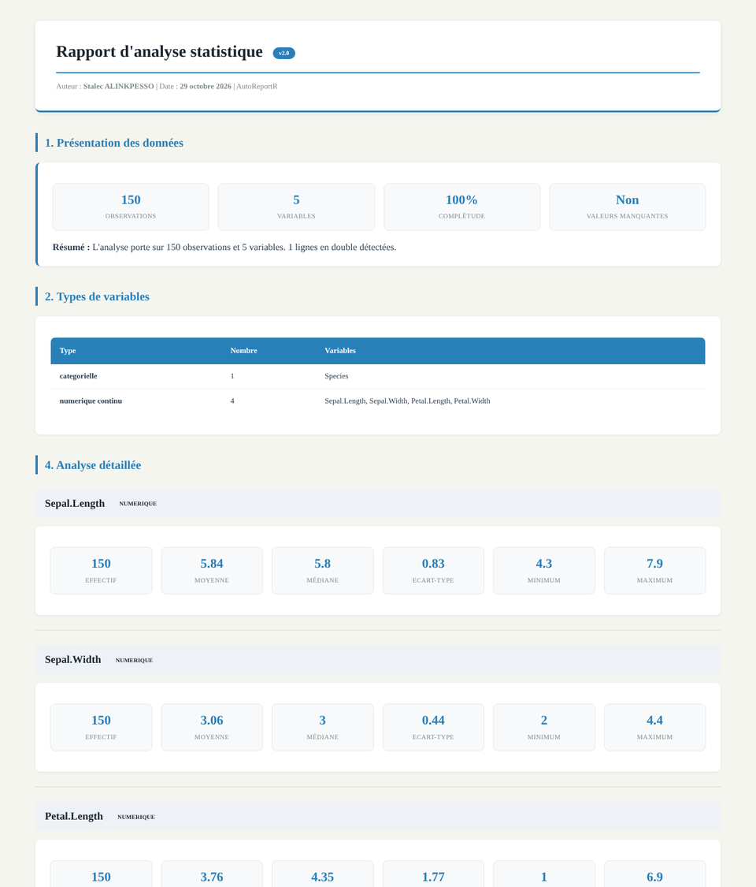

Ce que fait AutoReportR
Les étapes répétitives d'une analyse univariée, réalisées automatiquement et réunies dans un seul rapport.
Typage automatique
Chaque variable est reconnue comme numérique ou catégorielle, sans configuration.
Statistiques descriptives
Effectif, moyenne, médiane, écart-type, minimum, maximum ; effectifs, pourcentages et mode pour les variables qualitatives.
Valeurs manquantes
Nombre et pourcentage de valeurs manquantes par variable, taux de complétude global.
Synthèse et points clés
Détection des asymétries, des fortes dispersions, des modalités dominantes ou ex æquo.
Interprétations par IA
En option, une interprétation rédigée de chaque variable grâce à l'API Groq (Llama 3.3).
Rapport HTML
Un fichier unique, lisible sur ordinateur et sur mobile, à ouvrir ou partager directement.
Installation
Le package s'installe directement depuis GitHub.
Installer le package remotes (une seule fois)
Installer AutoReportR depuis GitHub
Charger le package
httr, jsonlite et readxl sont installés automatiquement avec le package.Utilisation
Une seule fonction à retenir : auto_report().
Ce que vous voyez dans la console
auto_report(), avec Sys.setenv(GROQ_API_KEY = "votre_cle"). Sans clé, le rapport est généré normalement, sans les interprétations rédigées. Une connexion Internet est nécessaire.Aperçu du rapport
Exemple réel généré avec auto_report(iris), sur le jeu de données iris fourni avec R (150 fleurs, 5 variables).

- Présentation des données : observations, variables, taux de complétude
- Types de variables détectés automatiquement
- Analyse des valeurs manquantes par variable, lorsque la base en contient
- Analyse détaillée de chaque variable, avec tableaux de fréquences, mode et modalités ex æquo
- Synthèse et points clés à retenir
Fonctions disponibles
La fonction principale s'appuie sur des fonctions utilisables séparément.